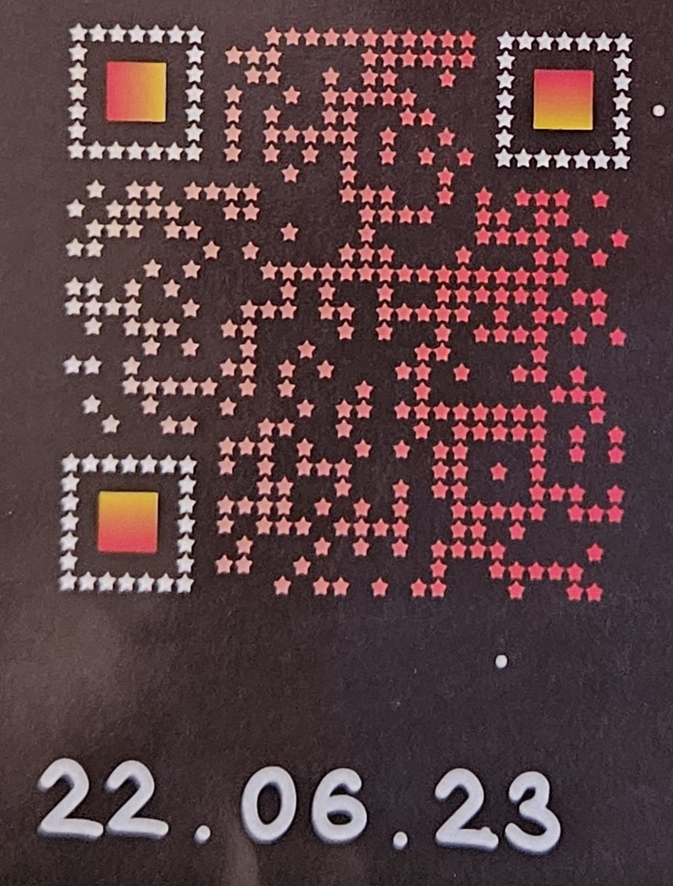

Queria desmostrar um pouco do meu amor por você e nada melhor do que fazer um site
Por meio desse site eu gostaria de falar um pouco sobre você
Eu gostaria de dizer como você é uma das pessoas mais importantes deste mundo para mim. Quero que você saiba que todos ao seu redor te amam por ser tão carismático, atencioso e gentil. Você é uma pessoa incrível, com um coração enorme e uma bondade que contagia todos ao seu redor. Você nunca hesita em ajudar alguém, sempre está pronto para oferecer uma mão amiga. Sim, você pode ser um pouco egocêntrico às vezes, mas quem não é? Esse é apenas um pequeno detalhe diante de todas as suas qualidades maravilhosas. Quero que saiba que todos os dias eu agradeço a Deus por ter te conhecido e por estar namorando com você. Você trouxe tanta alegria e amor para minha vida, e eu não consigo imaginar um futuro sem você. Eu quero passar o resto dos meus dias ao seu lado, compartilhando risadas, sonhos e conquistas. Espero que você sinta o mesmo, porque para mim, você é meu melhor amigo, meu confidente e meu amado namorado. Você é a pessoa com quem eu quero construir uma vida, enfrentar desafios e celebrar vitórias. Saiba que nenhuma dessas palavras é falsa. Cada uma delas vem do fundo do meu coração. EU TE AMO PRA CARALHO! E esse amor só cresce a cada dia. Obrigado por ser quem você é e por me fazer tão feliz.
Obs: eu escrevi tudo, só pedi o chat pra corrigir os erros de portugues
Nossas Memorys

"Este foi um dos dias mais felizes da minha vida..."
"Adoro lembrar deste momento especial que compartilhamos..."
Nossa Música

Mil e um motivos por Que Te Amo
- Sua inteligência
- Sua capacidade de sempre ajudar todo mundo mesmo reclamando bastante
- suas reclamasão
- suas fofocas
- Sua paciência
- Seu carinho
- E todo resto porque eu te amo de mais da conta não tem mais oq eu colocar pq não tenho palavras suficientes no discionario
- Te amo senhor ATOS
Minha Mensagem para Você
Pró nosso Futuro
Estou comprometido a fazer tudo que estiver ao meu alcance, para te fazer feliz, Mas em troca eu pesso que me alguente mais um pouco eu eprometo que todo dia eu tento ser melhor porque EU TE AMO PRA UM CARALHO!!